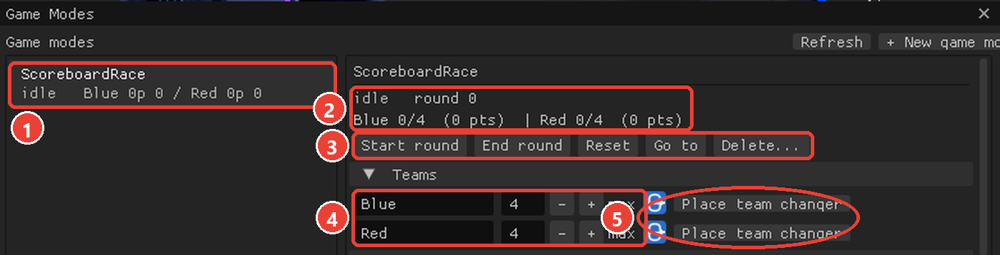
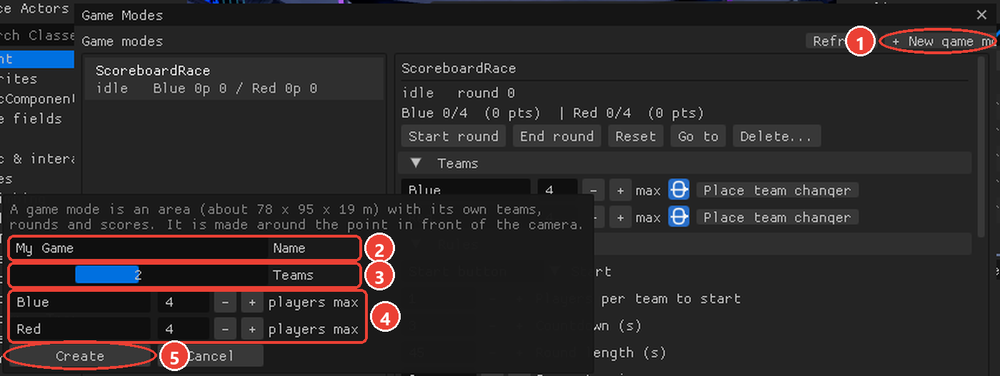
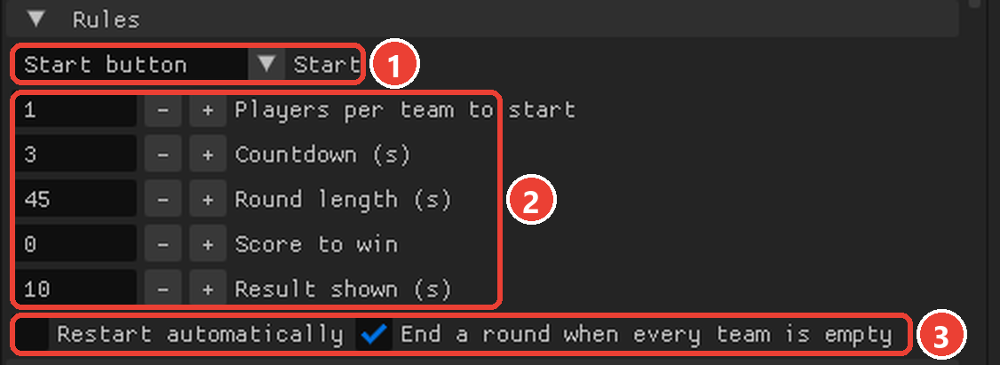
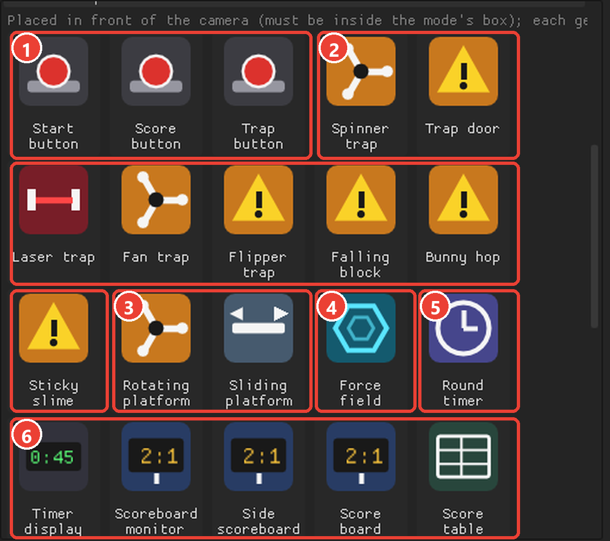
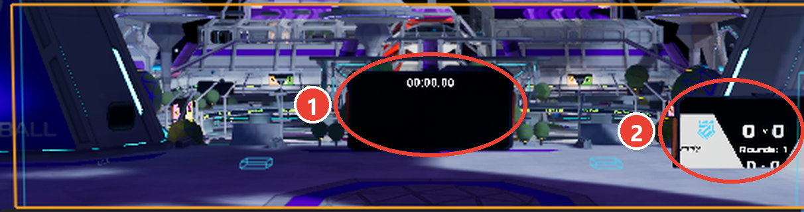
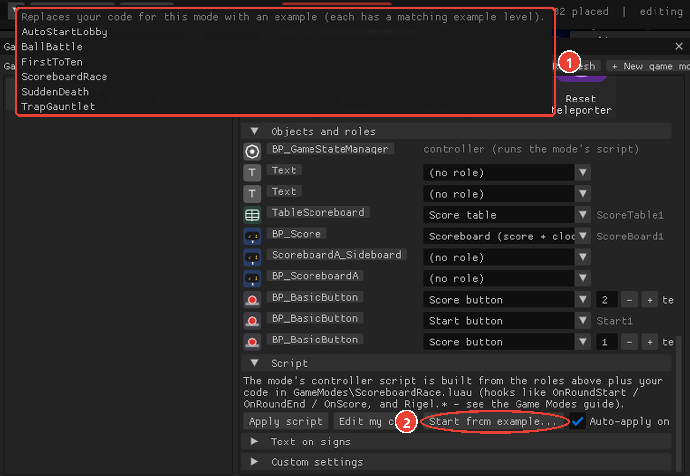
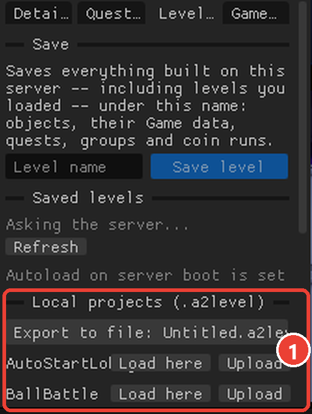

Build team games: teams, rounds, scores, traps, balls, scoreboards and your own Luau.
Contents
1What a game mode is
2Opening the Game Modes window
3Making one
4Teams and team changers
5Rules
6Pieces and roles
7Text on signs
8Your own code
9The examples
10Troubleshooting
11Building game modes with an AI agent
Orion Drift build 22284 · F12 shows the editor
1What a game mode is
A game mode is an area of the station with its own teams, rounds and scores. You build one in the Spec Editor, fill it with pieces -- team changers, start and score buttons, traps, force fields, timers, ball spawners, scoreboards, text signs -- and the server runs it for everyone, Quest players included, with no mods on their side.
Players pick a team by walking into one of the mode's team changers.
A round goes idle -> countdown -> running -> ended -> idle. The server counts the countdown and the round time, keeps the scores, decides the winner and tells every machine.
Pieces get roles ("start button", "trap on during rounds", "ball spawner" ...). The editor turns the roles into the mode's controller script and wires everything for you.
Your own Luau adds the rules only you can think of, through a handful of hooks and the Rigel library.
Game modes are saved in your levels and come back exactly when a level loads.
2Opening the Game Modes window
Click Game Modes in the toolbar (next to + Add), or open Details > Game Modes and click Open the Game Modes window. The window can be moved and resized; your game modes are on the left, the one you picked on the right. Every game mode also shows in the viewport as an orange box (green while a round runs) with its name and state.
A level must be open to make a game mode (Levels tab, or Ctrl+S to save one).
1 the Game Modes button in the toolbar. 2 a game mode's area: the orange box, with its name and state on top. 3 its team changers (outlined).

The Game Modes window. 1 your game modes (click one to edit it). 2 its state, round, and each team's players and points. 3 round controls: Start round, End round, Reset, Go to (flies the camera there), Delete. 4 each team's name and max players. 5 Place team changer, one per team.
3Making one
Fly to where the arena should be: a game mode is made around the point in front of the camera.
Click + New game mode. Type a name, choose 1 to 4 teams, name each team and set its max players.
Click Create. The orange box shows the area (about 78 x 95 x 19 m). Everything placed inside it belongs to the mode.

1 + New game mode. 2 the mode's name. 3 how many teams. 4 each team's name and max players. 5 Create.
Two modes can't overlap. Delete... removes a mode and everything in it.
4Teams and team changers
For each team, Place team changer puts a team changer in front of the camera (the spot must be inside the box). Walking into it puts a player on that team; the team's size and the max show in the window and on scoreboards.
A team changer is a door: its middle is 1.5 m up, so the server stands it on the floor under the spot you pick, facing the way the camera looks (players walk through it in that direction).
Mark the doors so players can find them. The examples frame each door in its team's colour (two cube posts just outside the 3.5 m opening and a beam over the top; nothing crosses the doorway) with a sign above it: {<mode>.team1.name} team.
Rename a team or change its max right in the window (press Enter / click away to apply).
Team changers only work inside a game mode. Placed anywhere else the server refuses them.
If a player is standing exactly where you place (or move) a team changer, it appears next to them and moves into place as soon as they step off. A changer created on top of a player would crash their game.
5Rules
Rule
Meaning
Start
Manual (the window's Start round, or a script), Start button (a button with the Start role), Automatic (when every team has enough players)
Players per team to start
for Automatic
Countdown (s)
seconds between "start" and the round beginning; 0 = straight away
Round length (s)
0 = no time limit (the round ends by score or by a script)
Score to win
a team reaching it wins at once; 0 = no limit
Result shown (s)
how long the result stays before the lobby
Restart automatically
start the next round after the result
End a round when every team is empty
so an abandoned round doesn't run forever: once a round has had players on a team and they all leave. A round started with empty teams keeps running
Ball back to its spawner after a goal
a Goal / Score box point resets every ball (a kick-off)

The rules. 1 how a round starts (Manual / Start button / Automatic). 2 players per team to start, countdown, round length, score to win, how long the result shows. 3 restart automatically, and end a round when every team is empty.
Start round, End round and Reset in the window control the mode by hand. Go to flies the camera there.
6Pieces and roles
Place pieces shows every useful piece with its icon; clicking one places it inside the mode (in front of the camera) and gives it its role straight away. Objects and roles lists everything in the mode with its icon; change any object's role from its drop-down.

Place pieces: each tile places that piece inside the mode with its role already set. 1 buttons: start, score, trap. 2 traps (the whole orange group). 3 moving platforms. 4 force field, for walls that open and close. 5 the round timer. 6 timer display, scoreboards and the score table.Objects and roles. 1 the controller: the object that runs the mode's script (made with the mode, keep it). 2 each object's role. 3 the slot name your own code uses for that object (Start1, ScoreBoard1 ...). Score buttons also say which team they score for. 4 Apply script, Edit my code, Start from example..., and Auto-apply on save.
Role
For
What it does
Start button
buttons
starts a round (when none is on)
Score button (team N)
buttons
+1 point for team N while a round runs
Trap - on during rounds
traps, sliding platforms
switched on when a round starts, off when it ends
Trap - pulses during rounds (seconds)
traps
flips on/off every N seconds while a round runs
Trap - fired by trap buttons
traps
switched on for a while when a trap button is pressed
Trap button (seconds)
buttons
fires every "fired by trap buttons" trap for N seconds
Wall - between rounds only
force fields, walls
solid between rounds, gone while a round runs
Wall - during rounds only
force fields, walls
only there while a round runs
Force fields are switched on and off for the wall roles; any other piece is shown and hidden (and its collision switched) instead -- the editor picks the right one for the object.
Round timer
Timer
counts the countdown, then the round (or up, with no limit)
Ball spawner
Jake ball / ball spawners
the server spawns or resets its ball when a round starts
Goal (team N)
Driftball goal, Goal
the ball going in during a round gives team N the goal's points (1, more for long shots)
Score box (team N, 0 = by side)
Score box (a disc trigger)
the ball flies through it; each pass during a round gives team N a point. 0 = by side: along the box's forward arrow scores for team 1, the other way for team 2
Ball start ring
Ball start ring
between rounds, carry the ball into it to start a round; hidden while a round is on
Scoreboard (score + clock)
the classic Score board
shows team 1 / team 2 points
Score table
the Score table
one row per team: name, score, players, rounds won
After changing roles click Apply script (or keep Auto-apply on save on and just save your code).
Scoreboards
Scoreboard monitors (and the side / half-court versions) need no role: the mode keeps its team scores and rounds won on them, and drives their clock and the arena state. During the countdown the monitor shows the seconds counting down while the round clock waits at the full round length; when the round starts it switches to the clock and the scores.
A monitor shows its game page only once someone is on a team; with every team empty it shows the empty-arena page.
The classic Score board shows team 1 and team 2 points (role Scoreboard).
The Score table shows a row per team (role Score table).
A Text sign can show anything the mode knows through templates (below).

In the arena: 1 a scoreboard monitor (its clock and the teams' scores), 2 the classic Score board (team 1 : team 2, rounds).
Balls, goals and the start ring (driftball)
Jake ball spawners (and the other ball spawners) spawn a real, networked ball on the server that every player sees. Give the spawner the Ball spawner role: the server spawns or resets the ball when each round starts, and Rigel.resetBalls() does it whenever your code asks (after a goal, say). Don't spawn balls from Luau: the script runs on every machine and each would make its own ball that only it can see.
Moving and sizing a ball. A ball is made at run time, so what you really place is its spawner. The editor lists the balls of your spawners (Ball (edits its spawner)) and you can pick and drag them like anything else: the spawner moves by as much as you moved the ball, and the ball follows. Moving the spawner itself does the same. Balls the station owns (training balls, death balls) are not listed.
Resize a ball by scaling the ball (not the spawner): the game sizes a spawner's ball at 1 / the spawner's scale on every machine, so a ball scaled to 2 sets its spawner to 0.5. Sizes 0.25 to 4 work; the ball keeps its size through rounds and moves, rests on the floor at its new size, and plays normally.
Rotating a ball changes nothing: a ball's rotation is its physics (it rolls).
Any edit to a spawner (move, scale, turn) rebuilds it, and it makes a fresh ball -- the old one is replaced, not lost. Scaling the spawner resizes its ball the other way round (a big spawner makes a small ball).
Goals. Place a Driftball goal from the pieces (or give any goal the Goal role) and set the team that scores there. The game's own goal detection fires, the mode adds the goal's points to that team, and -- with Ball back to its spawner after a goal on (the default) -- every ball goes back to its spawner for a kick-off. The goal takes the colour of the team defending it.
Score boxes. A Score box is a trigger the ball passes through (it doesn't bounce off). Give it a team, or 0 = by side: the direction the ball crosses decides the team (along the box's forward arrow = team 1, the other way = team 2) -- rotate the box so its arrow points at team 2's end. Scale it to the gap you want to guard.
Start ring. With a Ball start ring the mode keeps its ball out between rounds; a player carries it into the ring to start the round, like the station's arenas. The first 3 seconds after a round ends don't count (the ball is being put back), so a ring next to the spawner is fine. The ring hides while a round runs.
A goal or box counts once even though every machine sees it (the server ignores repeats of the same goal within 2.5 s), and only while a round is running. In your own code, Rigel.goal(team, points, key) does the same.
7Text on signs
Put a Text object in the mode and give it a text with {templates}. They update live for everyone. For a mode called Arena:
The window's Text on signs section lists them with a copy button. Your code can add its own: Rigel.setText("Leader", "Blue lead!") fills {Leader}.
8Your own code
Click Edit my code to open Documents\RigelScripts\GameModes\<mode name>.luau in VS Code (a template is made the first time), or Start from example... to begin from one of the examples. The editor puts your code into the mode's controller script together with the roles; Show generated shows the whole thing.

2 Start from example... opens 1 the list of example codes. Picking one replaces your code for this mode and applies it.
Don't write BeginPlay -- write any of these hooks:
function OnLobby() end-- no round onfunction OnCountdown(seconds: number) end-- a round is about to startfunction OnRoundStart(round: number) end-- round = 1, 2, ...function OnRoundEnd(winner: number) end-- winner = team number, 0 = drawfunction OnTeamChanged(team: number, size: number, old: number) endfunction OnScore(team: number, score: number, old: number) endfunction OnTime(secondsLeft: number) end-- every second of a countdown or round
Objects with roles are available by their slot names (shown next to each object in the window): Start1, Score1, TrapRound1, TrapFired2, Timer1, Ball1, ScoreBoard1, ...
Scripts run on every machine; the Rigel actions only take effect on the server, so it's safe that every machine calls them. Rigel.onStateChanged(f), onTeamChanged(f), onScoreChanged(f), onTimeChanged(f) are the callbacks behind the hooks -- use them from any other script in the mode too.
9The examples
Each example comes as a level (Levels tab, Local projects) with the arena built -- team changers, buttons, traps, scoreboards, signs -- and as code (Start from example...):

Levels tab: 1 the example levels are under Local projects. Click Load here to open one on the server you're on.
Level
What it shows
FirstToTen
a score race with a live "who leads" sign, start + score buttons, a scoreboard monitor and a Score board
AutoStartLobby
a lobby that counts players in and starts by itself, a force field that opens for the round, a timer
SuddenDeath
a timed round; a draw goes into a 30-second sudden death; a Score table
TrapGauntlet
traps fired by a trap button, a pulsing laser, a spinner on during rounds, all fired for the last 20 s
BallBattle
a Jake ball match: first to 5, the ball resets after every point
ScoreboardRace
every kind of scoreboard and a catch-up rule for the last 15 seconds
10Troubleshooting
"Team changers only work inside a game mode": place them inside the orange box.
The round ends by itself: End a round when every team is empty is on and everyone who was on a team left.
A button does nothing: check its role in Objects and roles, then Apply script. Score buttons only count during a round.
My code doesn't run: the Problems popup shows script errors; the game log shows [GM_<mode>.luau] lines. Use the checker in VS Code (the kit's Rigel checks), and never write BeginPlay in mode code.
The ball doesn't come back: give the spawner the Ball spawner role and call Rigel.resetBalls().
The monitor shows no countdown: set Countdown (s) above 0 and put someone on a team (an empty arena shows its empty page). Levels saved before 2026-09-24 need Apply script once to pick up the countdown fix.
The ball is the wrong size: its size is 1 / its spawner's scale. Scale the ball itself (not the spawner) to the size you want, or set the spawner back to 1.
11Building game modes with an AI agent
The editor has an MCP server (RigelScripts\mcp\rigel_mcp.py) that lets an AI agent such as Claude or Codex build game modes, place objects and write, check and fix Luau for you. See Rigel-MCP-Guide.pdf.